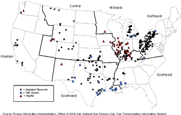

|
About U.S. Natural Gas Pipelines - Transporting Natural
Gas
based on data through 2007/2008 with selected updates |
||||||||||||||||||
|---|---|---|---|---|---|---|---|---|---|---|---|---|---|---|---|---|---|---|
|
Underground natural gas storage provides pipelines, local distribution companies, producers, and pipeline shippers with an inventory management tool, seasonal supply backup, and access to natural gas needed to avoid imbalances between receipts and deliveries on a pipeline network. There are three principal types of underground storage sites used in the United States today. They are: · depleted natural gas or oil fields (326), In a few cases mine caverns have been used.
Most underground storage facilities, 82 percent at the beginning of 2008, were created from reservoirs located in depleted natural gas production fields that were relatively easy to convert to storage service, and that were often close to consumption centers and existing natural gas pipeline systems. Since the 1980s, the number of salt cavern storage sites developed in the United States has grown steadily, principally because of its unique capabilities and high cycling rate (inventory turnover). The large majority of salt cavern storage facilities have been developed in salt dome formations located in the Gulf Coast States. Salt caverns leached from bedded salt formations in Northeastern, Midwestern, and Western States have also been developed but the number has been limited due to a lack of suitable geology. Cavern construction is more costly than depleted field conversion when measured on the basis of dollars per thousand cubic feet of working gas capacity, but the ability to perform several withdrawal and injection cycles each year reduces the per-unit cost of each thousand cubic feet of gas injected and withdrawn. |
U.S. Underground Natural Gas Storage Facilities  click to enlarge more recent map
|
|||||||||||||||||
|
Underground Storage by U.S. Region
At the close of 2007, 400 underground natural gas storage sites were operational in the United States. During the year, four new storage sites were added, one in Michigan, Mississippi, Pennsylvania, and West Virginia, while 18 existing storage fields underwent expansions, and two storage fields were abandoned (ceased operations). Consequently, working gas capacity in the U.S. increased by 32 Bcf, to 4,091 Bcf (4,059 Bcf in 2006) while deliverability rates rose to 88.2 Bcf/d (85.1 Bcf/d in 2006). The largest expansion of working gas capacity (9.3Bcf) occurred at the Midland natural gas storage site in Kentucky, a depleted-reservoir facility. Depleted-reservoir storage accounted for about 89 percent of the 41 Bcf of new working gas capacity added in 2007. The number, type, and profile of underground natural gas storage varies by region. Below is a brief overview for each of the six regions in the lower-48 States. Central (49) | Midwest (121) | Northeast (110) | Southeast (34) | Southwest (66) | Western (20) | Overall (400) Underground natural gas storage in the Central Region is notable for several reasons. First, many of the 49 storage facilities located in the region are used to store excess production rather than to serve as a supply source for local markets. Production is stored to allow a stable flow rate despite temporary demand fluctuations.
The Baker/Cedar Creek Field, owned and operated by the Williston Basin Interstate Pipeline Company, serves as support infrastructure for the natural gas that is produced in association with oil production in the area. With an estimated peak-day withdrawal rate of about 134 million cubic feet per day, the flow from this storage field is directed primarily to interconnections with the Northern Border Pipeline Company system between North and South Dakota. In recent years, however, the Baker field has not been heavily utilized due to a decrease in production from nearby associated-gas fields. Many of the pipelines serving the region also provide their shipper/customers with access to a large amount of underground storage capacity located in Illinois, Indiana, Michigan, and Ohio. The Midwest Region has 121 sites, the largest number in the country. Of all six regions, this region has the largest volume of underground (working gas) storage capacity (almost 1.2 trillion cubic feet (Tcf)) and daily deliverability (28.5Bcf/d) from storage. These levels account for about 30 percent of the U.S. total in each category. Regional intrastate pipelines and/or local distribution companies, such as Northern Illinois Gas Company (NICOR), control about 61 percent of daily deliverability from storage in this region.
The Great Lakes Gas Transmission Company and the ANR Pipeline Company systems both use Michigan storage facilities extensively to support their shippers' needs. In the first case, the Great Lakes Transmission Company system transports most of its volume eventually to markets in Ontario, Canada, but it uses storage sites located in Michigan to store supplies shipped for Canadian customers during the summer, providing withdrawal and delivery services during winter peak periods. ANR Pipeline Company and its affiliate ANR Storage Company together operate 15 sites in the State, while other storage operators in the State include the MichCon Gas Company (four sites), the Michigan Gas Storage Company (three sites), and its parent Consumers Energy Company (14 sites). Elsewhere in the Midwest Region, Consumers Energy Company, with 14 sites in Michigan, is the single largest LDC operator of underground storage fields in the lower 48 States. Its sites have an overall deliverability of more than 4.0 Bcf/d and working capacity of 140 Bcf. Trailing closely is the Northern Illinois Gas Company, which operates eight natural gas storage facilities in Illinois with a total daily deliverability level of 3.1 Bcf/d but with a total working gas capacity level of more than 152 Bcf. The States of Pennsylvania and New York are the key transit areas for gas deliveries within the region and include the major service territories of Dominion Transmission Company and Columbia Gas Transmission Company systems. These States, along with West Virginia, also have the largest underground storage capacity in the region. Storage is essential as a supply backup and for balancing gas supplies on the pipelines operating in the region. More pipeline capacity exits these States than enters, reflecting their storage capability as a seasonal supply source for the States to the north and east.
(Note: The peak-day deliverability from LNG in the region, 5.1 Bcf per day, is 33 percent as large as the total daily deliverability from underground storage facilities. This backup capability is incorporated into the operations of the regional network and is used to meet the rapid increases in demand that can occur because of sudden temperature changes in the region. Three of the eight currently active LNG importing facilities in the U.S. are located in the Northeast Region, the Cove Point LNG Company facility, located on the eastern shore of Maryland, the Northeast Gateway LNG Terminal located 16 miles offshore of Massachusetts,and the DistriGas Company’s Everett LNG facility located outside of Boston, Massachusetts.) The Texas Gas Transmission Company is the only long-haul natural gas pipeline system that retains a large portion of its deliverability for regional service, primarily in Kentucky. Slightly over 50 percent of its deliverability is within the region. This pipeline company also provides its shippers access to five company-owned underground storage facilities with a working gas capacity of more than 80 Bcf, or about 66 percent of the total working gas capacity in the State of Kentucky (and 45 percent of the regional total).
That level of storage service is equivalent to about 80 percent of the total daily capacity of Texas Gas Transmission Company’s lines moving north into Indiana. These storage facilities are also in close proximity to the ANR Pipeline Company system, which traverses the State of Kentucky to Indiana and Michigan. Combined, Texas Gas Transmission Company and ANR Pipeline Company have the capacity to move 3.0 Bcf per day north into Indiana. Underground natural gas storage plays a vital role in the efficient export and transmission of natural gas from the Southwest to other regions, as well as in supplementing regional needs. Its 66 underground storage facilities represent 1,030 Bcf of working gas capacity and an estimated daily deliverability level of 23.2 million cubic feet.
The States of Louisiana and Texas have more salt-cavern natural gas storage facilities (21) than anywhere else in the United States, of which almost half are owned/operated by independent storage operators. In fact, one-fifth of the working gas capacity and one-third of the daily deliverability available in the region is operated by independents. About 35 percent of the region's daily storage deliverability remains with interstate pipeline companies, while the rest is operated by LDCs (33 percent) or intrastate pipeline companies (32 percent). Underground natural gas storage facilities are found in only half of the states in the region, California, Oregon, and Washington. Moreover, approximately 88 percent of the region’s working gas capacity is located in California’s 12 underground natural gas storage sites, seven of which are owned by the two principal gas distributors in the State, Southern California Gas Company (SoCal) and Pacific Gas and Electric Company (PG&E). Most of their storage capacity is used for system balancing and as a way of maintaining a steady and high-utilization of pipeline capacity directed from Canada and the Southwest.
Total U.S. working gas capacity and daily deliverability at the beginning of 2008 reached 4.1 Tcf and 88.2 Bcf per day, respectively. Four hundred underground natural gas storage facilities were operational in the lower 48 States although 38 were marginal operations that reported little or no activity during 2007. The number of operational underground natural gas storage facilities peaked in 2001 at 418.
|
||||||||||||||||||
{kind=link}